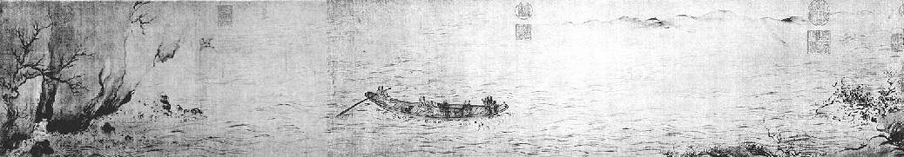

第十六章 赤壁赋
东坡现在过的是神仙般的生活。黄州也许是贫穷肮脏的小镇，但是无限的闲暇、美好的风景、诗人敏感的想象、对月夜的倾心、对美酒的迷恋——这些合而为一，便强而有力，足以使诗人的日子美满舒服了。庄稼已然种上，无金钱财务的烦心，他开始享受每一个日子给他的快乐。他有一群朋友，像他一样，可以把时间自由运用，而且还在一方面像他——身上金钱不多，身边空闲不少。在那些人之中，有一个奇特无比的李岩，若不是苏东坡笔下记载他的睡量之大，后代便对他茫然无知了。午饭之后，朋友正下围棋之时，李岩便到躺椅上一躺，立刻睡着。下了几盘之后，李岩翻个身说：“我刚睡了一回合，你们战了几回合了？”苏东坡在他的札记里说：李岩在四脚棋盘上用一个黑子独自作战。“著时自有输赢，著了并无一物。”此等生活真是睡梦丰足，苏东坡用下面欧阳修的一首七绝描写得很美：
夜凉吹笛千山月，路暗迷人百种花。 棋罢不知人换世，酒阑无奈客思家。
苏东坡在农舍雪堂和城中临皋亭两处住，每天两处往返，那不过是不到三分之一里的一段脏泥路，却大概变成了文学史上最出名的一条路。在过了城镇中那一段小坡之后，就到了黄泥坂，一直通到起伏的丘陵。那个地方向四周一望，似乎全是黄色，只有树木苍翠、竹林碧绿而已。苏东坡曾在徐州建有黄楼。现今住在黄州，日日横过黄泥坂，而后到达黄冈的东坡。他已经脱去了文人的长袍，摘去了文人的方巾，改穿农人的短褂子，好使人不能辨识他士大夫的身份。他每天来往走这段路。在耕作之暇，他到城里去，喝得小有酒意，在草地上躺下便睡，直到暮色沉沉时好心肠的农人把他叫醒。有一天，他喝醉之后，写出了一首流浪汉狂想曲，名为《黄泥坂辞》。其结尾部分如下：
朝嬉黄泥之白云兮，莫宿雪堂之青烟。 喜鱼鸟之莫余惊兮，幸樵苏之我嫚。 初被酒以行歌兮，忽放杖而醉偃。 草为茵而块为枕兮，穆华堂之清晏。 纷坠露之湿衣兮，升素月之团团。 感父老之呼觉兮，恐牛羊之予践。 于是蹶然而起，起而歌曰： 月明兮星稀，迎余往兮饯余归。 岁既晏兮草木腓。归来归来兮，黄泥不可以久嬉。
但是他和酒友的夜游却引起了有趣的谣言，不但在当地，连宫廷都知道了。也幸喜饮酒夜游，这种生活才使他写出了不朽的杰作，有诗，也有散文。他那篇牛肉与酒的小文记的就是一件异乎寻常的荒唐夜游行径。
今日与数客饮酒，而纯臣适至。秋热未已，而酒白色。此何等酒也？入腹无脏，任见大王。既与纯臣饮，无以侑酒。西邻耕牛适病足，乃以为 。饮既醉，遂从东坡之东直出，至春草亭而归，时已三鼓矣。
当时有一个人说春草亭位于城外，由此篇文字足以证明苏东坡喝私酒，杀耕牛，在城门已关闭之后，乃醉醺醺爬过城墙而回。“难道纯臣也是个荒唐鬼？”
又一次夜游，他可把太守吓坏了。他在江上一条小舟中喝酒，夜晚的天空极美，他一时兴起，唱词一首道：
夜饮东坡醒复醉，归来仿佛三更。 家童鼻息已雷鸣。敲门都不应，依杖听江声。 长恨此身非我有，何时忘却营营。 夜阑风静縠纹平。小舟从此逝，江海寄馀生。
第二天，谣传苏东坡曾到过江边，写了这首告别词，已经顺流而下逃走了。这谣言传到太守耳朵里，他大惊，因为他有职责监视苏东坡不得越出他的辖境。他立刻出去，结果发现苏东坡尚卧床未起，鼾声如雷，仍在酣睡。这谣言也传到了京都，甚至传到皇帝的耳朵里。
次年，发生了一个更严重的谣言。苏东坡过去就在胳膊上患有风湿，后来右眼也受了影响，有几个月他闭门不出，谁也没见到他。那时，散文大家曾巩在另一省死亡，这时，又一个谣言传开，说苏东坡也在同一天去世，二人一同玉楼赴召，同返天庭了。皇帝听说，向一位大臣询问，那大臣是苏东坡的亲戚。他回奏说也曾听到此一消息，但不知是否可靠。那时皇帝正要吃午饭，却无胃口吃，叹了口气说：“难得再有此等人才。”于是离桌而去。这消息也传到范镇耳朵里，他哭得很伤心，吩咐家人去送丧礼。随后一想，应当派人到黄州打听清楚才好。一打听才发现传闻失实，都起因于苏东坡数月闭门不出的缘故。苏东坡给范镇的回信里说：“平生所得毁誉，殆皆此类也。”
苏东坡这种解脱自由的生活，引起他精神上的变化，这种变化遂表现在他的写作上。他讽刺的苛酷，笔锋的尖锐，以及紧张与愤怒，全已消失，代之而出现的则是一种光辉温暖、亲切宽和的诙谐，醇甜而成熟，透彻而深入。倘若哲学有何用处，就是能使人自我嘲笑。在动物之中，据我所知，只有人猿能笑，不过即使我们承认此一说法，但我信而不疑的是，只有人能嘲笑自己。我不知道我们能否称此种笑为神性的笑。倘若希腊奥林匹亚圣山的神也犯人所犯的错误，也有人具有的弱点，他们一定常常自我嘲笑吧。但是基督教的神与天使则绝不会如此，因为他们太完美了。我想，若把自我嘲笑这种能力称为沦落的人类唯一自救的美德，该不是溢美之词吧。
在苏东坡完全松弛下来而精神安然自在之时，他所写的随笔杂记就具有此种醇甜的诙谐美。他开始在他的随笔里写很多漫谈偶记，既无道德目的，又乏使命作用，但却成了最为人喜爱的作品。他写了一篇文字，说自己的贫穷，又说到他门人的贫穷。他说：“马梦得与仆同岁月生，少仆八日。是岁生者，无富贵人，而仆与梦得为穷之冠。即吾二人而观之，当推梦得为首。”另有一篇随笔，是两个乞丐的故事：
有二措大相与言志。一云：“我平生不足唯饭与睡耳，他日得志，当饱吃饭了便睡，睡了又吃饭。”一云：“我则异于是。当吃了又吃，何暇复睡耶？”
不管在什么情况之下，幸福都是一种秘密。但是凭苏东坡的作品而研究其内在的本性，借此以窥探他那幸福的秘密，便不是难事了。苏东坡这位天纵大才所给予这个世界者多，而所取自这个世界者少，他不管身在何处，总是把稍纵即逝的诗的感受赋予不朽的艺术形式，而使之长留人间，在这方面，他丰裕了我们每个人的生活。他现在所过的流浪汉式的生活，我们很难看作是一种惩处，或是官方的监禁。他享受这种生活时，给天下写出了四篇他笔下最精的作品：一首词《念奴娇·赤壁怀古》，又名《酹江月》，也以《大江东去》著称；两篇月夜泛舟的前后《赤壁赋》；一篇《记承天夜游》。单以能写出这些绝世妙文，仇家因羡生妒，把他关入监狱也不无道理。赤壁夜游是用赋体写的，也可以说是描写性的散文诗，有固定的节奏与较为宽泛的音韵。苏东坡完全是运用语调和气氛。这两篇赋之出名不无缘故，绝非别人的文章可比，因为只用寥寥数百字，就把人在宇宙中之渺小的感觉道出，同时把人在这个红尘生活里可享受的大自然丰厚的赐予表明。在这两篇赋里，虽然不押韵，只凭文字巧妙的运用，诗人已经确立了一种情调，不管以前已然读过十遍百遍，对读者还会产生催眠的作用。人生在宇宙中之渺小，表现得正像中国的山水画。在山水画里，山水的细微处不易看出，因为已消失在水天的空白中，这时两个微小的人物，坐在月光下闪亮的江流上的小舟里。由那一刹那起，读者就失落在那种气氛中了。
苏东坡正和同乡道人杨世昌享受夜景，那是七月十六孟秋之夜。清风在江面上缓缓吹来，水面平静无波。东坡与朋友慢慢喝酒吟诗。不久，明月一轮出现于东山之上，徘徊于北斗星与牵牛星之间。白雾笼罩江面，水光与雾气相接。二人坐在小舟中，漂浮于白茫茫的江面之上，只觉得人如天上坐，船在雾中行，任其漂流，随意所之。二人开始歌唱，手拍船舷为节拍。唱出了：
桂棹兮兰桨，击空明兮溯流光。 渺渺兮予怀，望美人兮天一方。
东坡的朋友善吹箫，开始吹起来，东坡哼着歌唱，箫声奇悲，如怨如慕，如泣如诉，余音袅袅，细若游丝，最后消失于空气之中。另一条船上的寡妇竟闻之而泣，水中的鱼也为之感动。
苏东坡也为箫声所动，问朋友何以箫声如此之悲。朋友告诉他：“你还记得在赤壁发生的往事吧？”一千年以前，一场水战在此爆发，决定了三国蜀魏吴的命运。难道苏东坡不能想象曹操的战船，真是帆樯如林，自江陵顺流而下吗？曹操也是个诗人。难道东坡不记得曹操夜间作的“月明星稀，乌鹊南飞”的诗句吗？朋友又向东坡说：“这些英雄而今安在？今天晚上，你我无拘束，驾一叶之扁舟，一杯在手，享此一时之乐。我们不啻宇宙中的一蚊蝇，沧海中的一沙砾。人生在瞬息之间即化为虚幻，还不如江流之无尽，时光之无穷。我真愿挟飞仙而邀游于太虚之中，飞到月宫而长生不返。我知道这些只是梦想，从无实现之望，所以不觉箫声吹来，便如此之悲了。”
苏东坡安慰朋友说：“你看水和月！水不断流去，可是水依然在此；月亮或圆或缺，但是月亮依然如故。你若看宇宙之中发生的变化，没有经久不变的，何曾有刹那间的停留？可是你若从宇宙中不变化的方面看，万物和我们人都是长久不朽的。你又何必羡慕这江水呢？再者，宇宙之中，物各有主，把不属于我们的据为己有，又有何用？只有江上之清风、山间之明月，是供人人享受的。凭我们的生命和血肉之躯，耳听到而成声，目看到而成色——这些无限的宝贝，取之不尽，用之不竭，造物无私，一切供人享受，分文不费，分文不取。”
听了这一番话，朋友也欣然欢笑。二人洗净杯盘，继续吃喝。后来，不待收拾桌子，便躺下睡去，不知东方已经露出了曙光。
三个月以后，苏东坡又写了一篇《后赤壁赋》。还是月明之夜，苏东坡和两个朋友自雪堂漫步走向临皋亭。路上经过黄泥坂。地有白霜，树无青叶。人影在地，明月在天。几个朋友十分快乐，开始吟唱，一人一节。不久，一个人说：“月白风清，如何度此良夜，方为不虚？我们好友相聚，竟没有酒菜，岂非美中不足？”另一人说：“今天傍晚，我捕到几条鱼，巨口细鳞，好像松江的鲈鱼，可是哪儿去弄酒呢？”苏东坡决定回去央求妻子给他们点儿酒，做酒总是妻子见长的事。他们真是喜出望外，因为妻子说家里有几坛子酒，收藏已久，就是为了随时喝好方便。几个朋友于是携着酒和鱼，又到赤壁之下泛舟夜游去了。江水落了很多，好多巨大的岩石都在水面露出，而赤壁尤其显得在水面之上，岸然高耸。不过几个月的工夫，风光已大为不同，几乎不能辨认了。在夜色美妙的魅力下，苏东坡要朋友和他一同攀登到赤壁之上，但是朋友不肯，苏东坡一个人爬上去。他把衣裳塞起来，在灌丛荆棘之中寻路上去，一直爬到最高处，他知道那里住着两个苍鹰。他立在巨大的岩石上，向深夜大声吼啸，四周小谷有声相应答，他一时都忘记了自己置身何处，忽然不知何故，竟感悲从中来，觉得不能在那儿停留过久。他下去，又回到舟中，解开缆绳，任凭小舟顺流漂动。
《赤壁后游图》
中国画 马和之 宋 北京故宫博物院藏
苏轼被贬黄州，两度夜游黄州赤壁，写下了前后《赤壁赋》和著名的《念奴娇·赤壁怀古》，寄怀古幽思，泄胸中块磊。《赤壁赋》主要写真景实情，《后赤壁赋》描写了较多虚景幻境。马和之的《赤壁后游图》，画面景象比较简练，却点出了主要情节。一叶扁舟随波漂荡，艄公挟橹观景，正是“放乎中流，听其所止而休焉”的情景。
时将半夜，四周一片寂静。两个仙鹤孤零零地，自东方飞来，伸展着雪白的翅膀，仿佛仙人的白袍飘动。两只鹤长鸣几声，在船上掠过，一直往西飞去，苏东坡心里纳闷，不知将有何事发生。不久大家回家去。苏东坡上床就寝，得了一梦。梦里看见两个道士，身披羽衣，状若仙人。他们认得苏东坡，问他赤壁之游是否很快乐。东坡请问姓名，二人不答。东坡说：“我明白了。今天晚上我看见你们俩从我头上飞过去了！”两个道士微微一笑。东坡便从梦中醒来。他开门外望，一无所见，外面街道上只有一片寂寥而已。苏东坡怎样确立一种气氛，由上面可以看出，他是暗示另外一个境界，一个道家的神仙境界——仙鹤自然是沿用已久的道家象征。他表示自己不知置身何处，便引起读者迷离惝恍之感。根据中国人的信念，现在的人生只是在人间瞬息的存在，自己纵然不知道，但是很可能前生是神仙，下一辈子也会再度是神仙。
大约和写这两篇小赋同时，苏东坡又写了一篇短短的月下游记。一天夜里他不能入睡，起来在承天寺月下漫步，承天寺离临皋亭很近。所记只是刹那间一点儿飘忽之感而已。这篇游记现在已然成了散文名作，因其即兴偶感之美，颇为人所喜爱。
记承天夜游
元丰六年十月十二日夜，解衣欲睡，月色入户，欣然起行。念无与为乐者，遂至承天寺，寻张怀民。怀民亦未寝，相与步于中庭。庭下如积水空明，水中藻荇交横，盖竹柏影也。何夜无月，何处无竹柏，但少闲人如吾两人者耳。
这篇小品极短，但确是瞬息间快乐动人的描述，我们若认识苏东坡主张在写作上，内容决定外在形式的道理，也就是说一个人作品的风格只是他精神的自然流露，我们可以看出，若打算写出宁静欣悦，必须先有此宁静欣悦的心境。他究竟怎样陶冶出此种恬适的心境呢？且听下回分解。